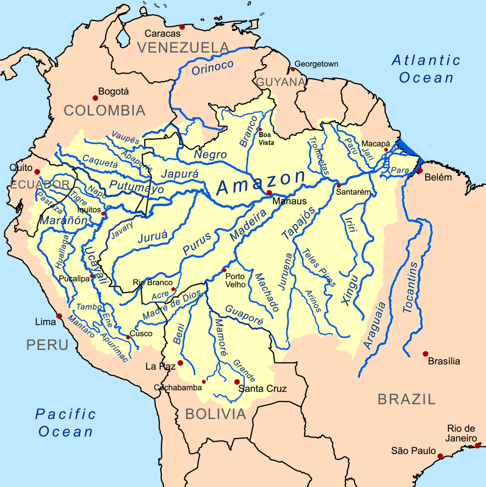
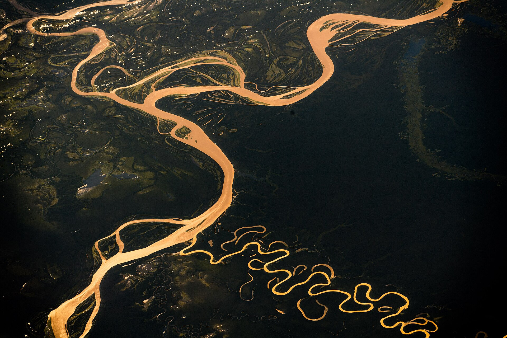
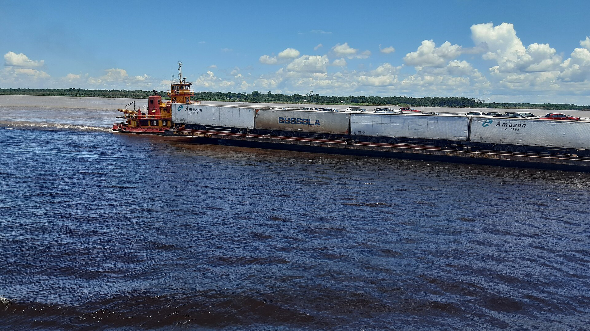

תקציר
נהר האמזונס הוא לא רק נהר ארוך במיוחד. הוא מערכת מים עצומה שמחברת הרים, יערות, יובלים, ערים, כפרים, עמים ילידיים, בעלי חיים וצמחייה טרופית. במסע שלנו הוא מסמן מעבר חשוב: אחרי שפך האמזונס, אנחנו כבר איננו עומדים רק על קו החוף, אלא נכנסים אל פנים היבשת.
מה שמייחד את האמזונס הוא השילוב בין אורך, רוחב, עומק, ספיקת מים אדירה ואגן ניקוז ענק. יש נהרות ארוכים ממנו לפי חלק משיטות המדידה, ויש ויכוחים על אורך מדויק, אך מבחינת כמות המים והיקף המערכת ההידרולוגית — האמזונס הוא מן הענקים הגדולים ביותר של כדור הארץ.
בדף הזה נביט בנהר כגיבור של ממש: נעקוב אחר שמו, אחר המסע האירופי של אוריאנה, אחר הנתונים ההידרולוגיים שלו, אחר היובלים, בעלי החיים, הצומח והעמים שחיו לאורכו הרבה לפני שהופיע במפות אירופיות.
סיפור ההגעה אל נהר האמזונס
לאחר שפך האמזונס, המסע משנה כיוון. במקום להפליג לאורך החוף, הדמיון עולה במעלה הנהר. הנהר אינו עוד קו כחול על מפה, אלא דרך רחבה, משתנה ולעיתים מפחידה. הוא נפתח לתעלות, יובלים, איים, חופים בוציים ויערות מוצפים.
עבור האירופים של המאה ה־16, הנהר היה תעלומה. הם ראו מים מתוקים בכמות כמעט בלתי נתפסת, יערות שאין להם סוף, קולות בעלי חיים, סירות מקומיות, כפרים, עמים ושפות שלא הכירו. בעיניהם זה היה מרחב חדש; בעיני העמים המקומיים זה היה עולם מוכר, מלא שמות, דרכים, טקסים וזיכרונות.
כך האמזונס הופך בפרויקט שלנו מציון גאוגרפי לפרק על מפגש בין עולמות: עולם המפות האירופיות, עולם הנהרות הילידי, ועולם הטבע הטרופי העצום.
ויסנטה יאנייס פינסון ופרנסיסקו דה אוריאנה
ויסנטה יאנייס פינסון מזוהה עם הגעה אירופית מוקדמת לאזור שפך האמזונס סביב שנת 1500. הוא לא “גילה” את הנהר במובן המקומי, שכן עמים ילידיים חיו באזור והכירו אותו היטב, אך מנקודת המבט האירופית מסעו סימן מפגש מוקדם עם מערכת המים האדירה.
פרנסיסקו דה אוריאנה הוא הדמות המזוהה ביותר עם המסע לאורך הנהר עצמו. בשנת 1541 יצא עם כוח ספרדי מאזור האנדים, ובמהלך המסע נסחף או המשיך במורד הנהרות עד שהגיע אל הנהר הגדול ואל האוקיינוס האטלנטי בשנת 1542.
המסע של אוריאנה היה קשה, מסוכן ומלא אי־ודאות. הוא עבר בין יובלים, יערות, קהילות מקומיות ומחסור במזון. בסוף, מסעו הפך לאחד הסיפורים הגדולים של חקר דרום אמריקה והעניק לנהר את שמו האירופי המפורסם.
אטימולוגיה: מקור השם אמזונס
השם “אמזונס” קשור למסעו של פרנסיסקו דה אוריאנה. לפי המסורת האירופית, אנשי המשלחת נתקלו בקבוצות שבהן נשים השתתפו בלחימה, והדבר הזכיר להם את האמזונות מן המיתולוגיה היוונית — נשים לוחמות אגדיות. מכאן התפתח השם Rio Amazonas.
השם הזה מספר יותר על הדמיון האירופי מאשר על הנהר עצמו. הוא משקף את הדרך שבה אירופים פירשו מציאות חדשה דרך סיפורים מוכרים מן העולם הקלאסי. לנהר היו שמות מקומיים רבים, והקהילות שחיו לאורכו לא חשבו עליו כ“אמזונס” במובן האירופי, אלא כציר חיים, מסחר, דיג, תנועה ופולחן.
הידרולוגיה של נהר האמזונס
האמזונס הוא מערכת מים עצומה. הוא נולד ממקורות בהרי האנדים, מקבל אליו מאות יובלים, חוצה מרחבים טרופיים, ומזרים לאוקיינוס האטלנטי כמות מים אדירה. ההידרולוגיה שלו היא הסיבה לכך שהנהר נתפס כאחד ממנועי החיים הגדולים של כדור הארץ.
אורך הנהר נתון לוויכוח מדעי, משום שהשאלה “מהו המקור הרחוק ביותר” תלויה בשיטת מדידה. לכן בדף זה נציג טווח מקובל ולא מספר יחיד נוקשה. גם עומקו משתנה מאוד בין אזורים, בין עונות ובין אפיקים.
במקטעים רבים עומק הנהר נע סביב עשרות מטרים. במקומות עמוקים במיוחד הוא עשוי להגיע ליותר מ־90 מטרים, ובחלק מן המדידות מוזכרים עומקים המתקרבים ל־100 מטר ואף יותר. בעונת ההצפות מפלס המים עולה משמעותית, ויערות שלמים הופכים למרחב מוצף שניתן לנוע בו בסירות.
סוגי מים: לבנים, שחורים וצלולים
אחד המאפיינים המרתקים של מערכת האמזונס הוא ההבדל בין סוגי המים. לא כל הנהרות באגן נראים אותו דבר, ולא כולם נושאים את אותם חומרים. חלקם עכורים ובהירים, חלקם כהים כמעט כמו תה, וחלקם צלולים יחסית.
נהרות מים לבנים, כמו חלקים מרכזיים במערכת האמזונס, נושאים סחף רב מן האנדים ולכן נראים בהירים ועכורים. נהרות מים שחורים, כמו ריו נגרו, מקבלים צבע כהה מחומר אורגני שמגיע מן היער. נהרות מים צלולים, כמו טפז׳וס, מכילים פחות סחף ונראים נקיים ובהירים יותר.
היובלים המרכזיים
אי אפשר להבין את האמזונס בלי היובלים שלו. הנהר הגדול הוא תוצאה של רשת עצומה: יובלים מגיעים מן האנדים, מן היערות, מן הרמות ומן המישורים, וכל אחד מוסיף מים, סחף, דגים, דרכי שיט וסיפורים מקומיים.
ריו נגרו, למשל, מפורסם במימיו הכהים ובמפגש המרהיב עם האמזונס ליד מנאוס. מדיירה הוא אחד היובלים הגדולים והחשובים ביותר. טפז׳וס ושינגו מביאים מים צלולים יותר מאזורים אחרים, ופורוס וז׳פורה מחברים אזורים עצומים של יערות ונהרות.
בעלי החיים של נהר האמזונס ושמותיהם
בדף שפך האמזונס בחרנו בעלי חיים של אזור המפגש בין נהר לים. כאן, בדף הנהר עצמו, נבחרו בעלי חיים אחרים כדי לתת לדף זה אופי עצמאי: בעלי חיים של יער, גדות נהר, מים מתוקים וביצות.
הצומח של הנהר
האמזונס אינו רק מים. סביבו צומחת מערכת עצומה של עצים, דקלים, צמחי מים וצמחי גדות. חלקם שימשו מזון, חלקם תרופות, חלקם חומרי גלם, וחלקם הפכו חשובים בכלכלה העולמית.
עץ הגומי שינה את תולדות האזור בתקופת “קדחת הגומי”. דקלי אסאי הפכו לסמל מזון וכלכלה מקומית. קקאו קשור להיסטוריה עמוקה של אמריקה הטרופית. קפוק הוא עץ ענק ומרשים, וויקטוריה אמזוניקה היא אחד מצמחי המים המפורסמים בעולם.
עמים ילידיים לאורך הנהר
הרבה לפני שהנהר נקרא “אמזונס” במפות אירופיות, חיו לאורכו עמים ילידיים רבים. הנהר היה דרך, מקור מזון, גבול, מקום מפגש, מרחב פולחני וזיכרון קהילתי. סירות, דיג, חקלאות גדות, מסחר ושפה — כל אלה התפתחו יחד עם הנהר.
היאנומאמי, הטיקונה, האשנינקה וקבוצות רבות נוספות מייצגות רק חלק קטן מן המגוון האנושי העצום של האזור. כל קבוצה הכירה יובלים, עונות, בעלי חיים וצמחים בדרכה שלה. לכן ההיסטוריה של האמזונס אינה מתחילה במגלים האירופים, אלא בעמים שחיו בו, קראו לו בשמותיהם, ופיתחו סביבו תרבות.
ציר זמן קצר
חשיבות עולמית
נהר האמזונס חשוב לעולם כולו. הוא מזרים כמות מים אדירה לאוקיינוס, תומך במערכות אקולוגיות עצומות, מקיים דיג ותחבורה, ומשפיע על חיי מיליוני בני אדם. הוא גם קשור קשר עמוק ליער האמזונס, למעגלי גשם ולדיונים עולמיים על אקלים ושימור טבע.
אבל החשיבות שלו אינה רק סביבתית. האמזונס הוא גם מרחב תרבותי והיסטורי. הוא מספר על עמים ילידיים, על מפגש עם אירופה, על ניצול משאבים, על מחקר מדעי, ועל המאבק המודרני לשמור על אחד המרחבים החשובים ביותר בכדור הארץ.
חשיבות למסע שלנו
במסע שלנו, נהר האמזונס הוא רגע של כניסה אמיתית אל פנים דרום אמריקה. אחרי האיים, החופים, פנמה, חוף הגיאנות ושפך האמזונס, הנהר הגדול הופך לדרך המרכזית.
מכאן נמשיך אל היעד הבא: יער האמזונס. אם הנהר הוא הדרך, היער הוא העולם שמקיף אותה — עולם של עצים, בעלי חיים, עמים, אגדות, מדע וסכנה.